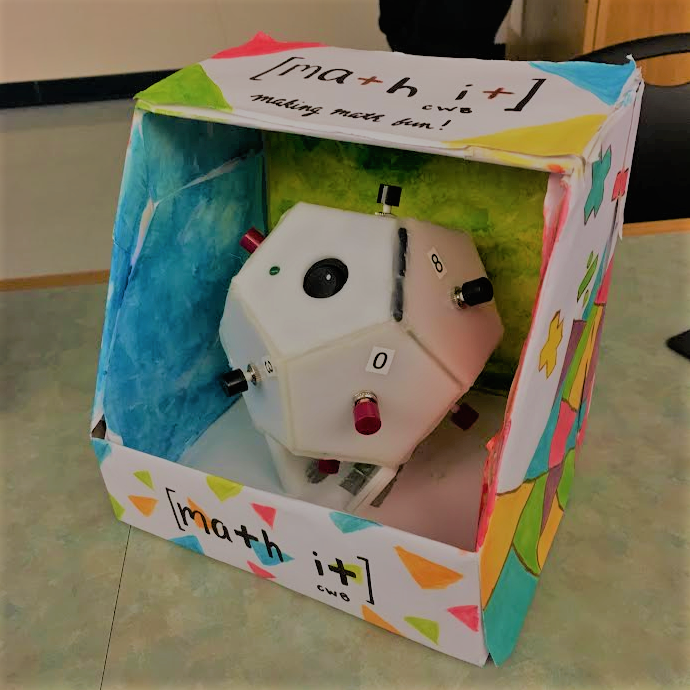
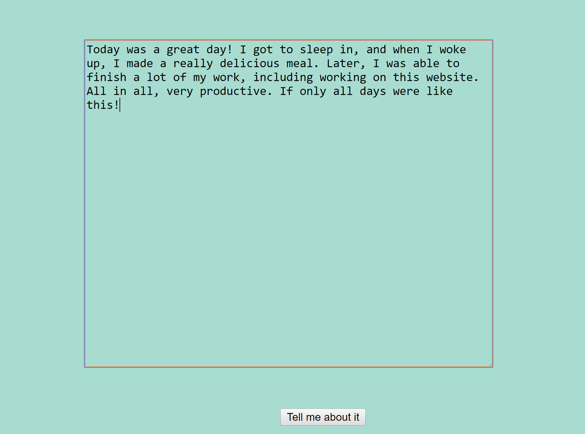
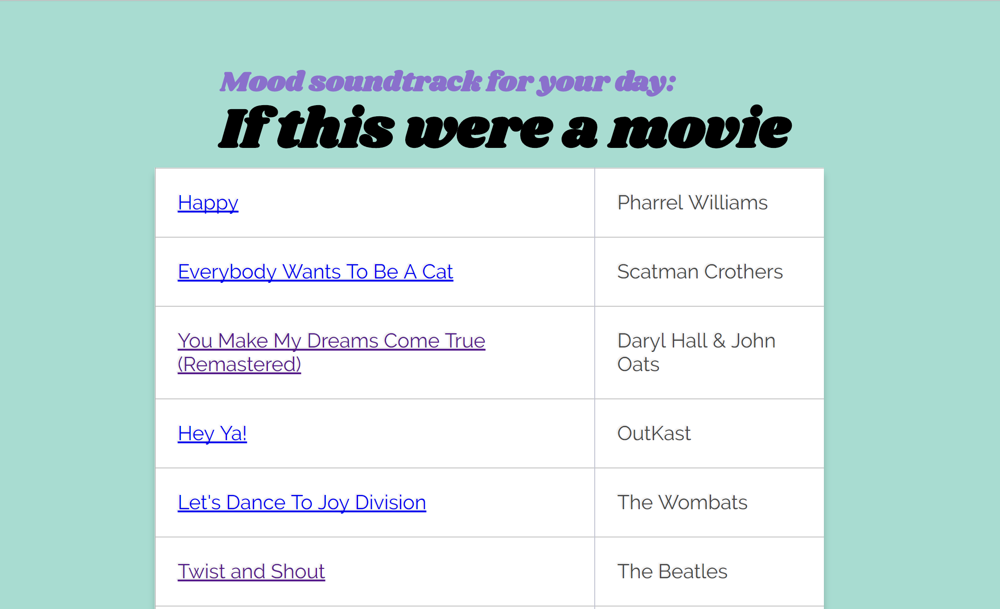

Math It
Created for GE1502
Using Arduino
The Math It is a handheld learning tool and game designed to help younger
elementary school children become more proficient in arithmetic. The device asks
math facts, and the player must input the correct answer using the buttons within the
allotted time limit. There are four types of play (addition, subtraction, multiplication,
and division) as well as three difficulty levels. As a player continues to answer more
questions correctly, the time limit decreases, and the Math It keeps track of how many
questions have been correctly answered in a game.
The Destroyer: Sumobot
Created for GE1501
Using Arduino
True to its name, The Destroyer squashed nearly all competition during the class Sumobot
competition, earning second place. With two downward facing sensors and a front sensor, the
robot was designed to push its competitors out of the sumo ring while keeping itself
within the confines of the ring. The Destroyer won the winner's bracket of the double elimination
tournament before falling to a close second in the finals. The Destroyer won the vote for Best Design,
Best Programming, and Runner Up awards.
For this project, we programmed the robot's movements in Arduino, and constructed the curved ramp
in front using balsa wood and lasercut plywood.


InTune
Created for Hack Beanpot 2017
Using HTML, CSS, JavaScript, Indico API, Spotify API
If your life were a movie, what would your soundtrack sound like? InTune allows users to write a
journal entry describing how their day went, and after analyzing the emotions expressed in that
entry, shows the user a playlist of songs to match their day. All songs on their playlist link
to spotify so they can start listening right away.
InTune won second place for best use of an Indico API at Hack Beanpot 2017 in Boston, MA.
I worked on the backend of this project, linking together the Indico and Spotify
APIs with JavaScript.